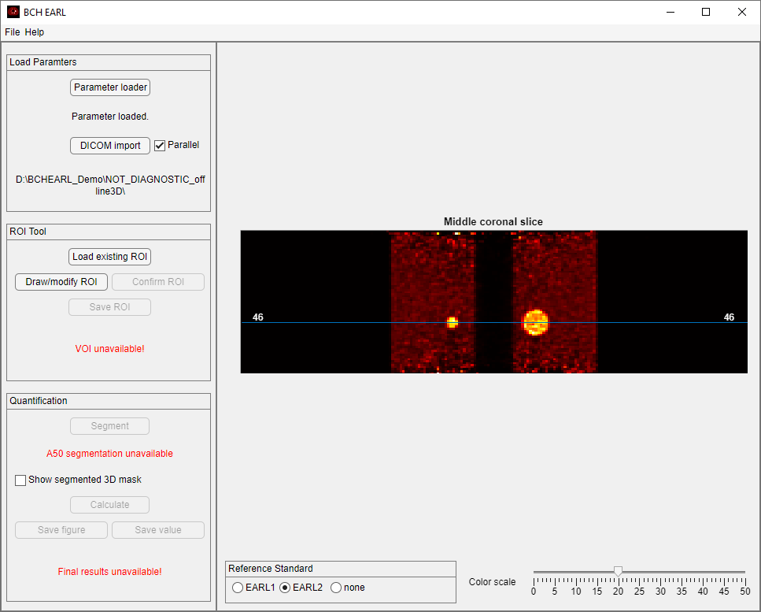
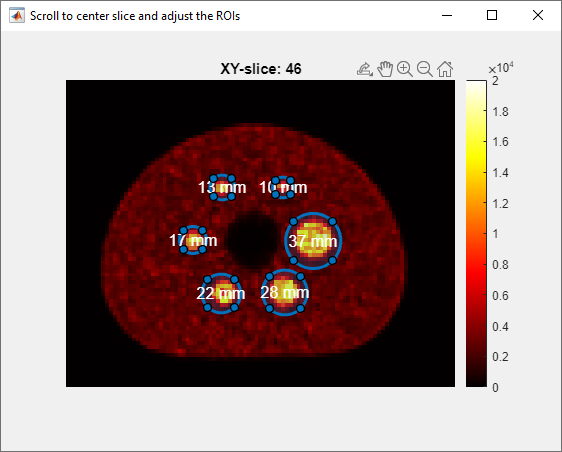
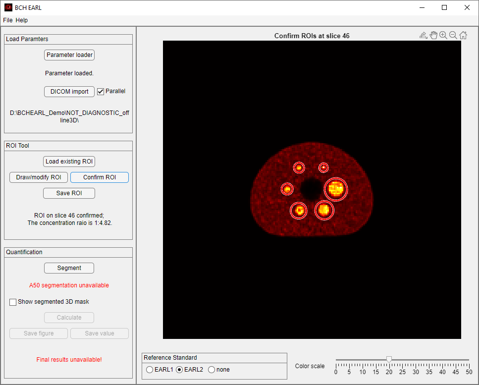
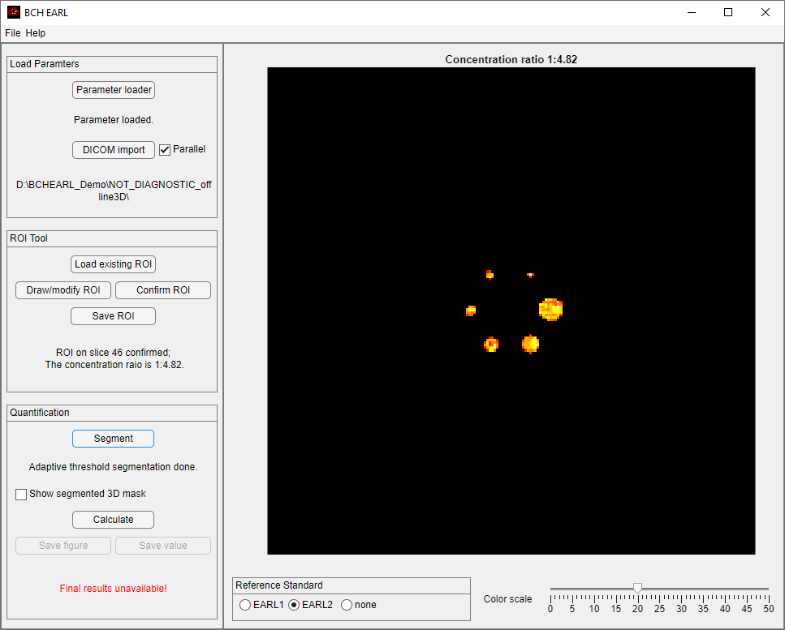
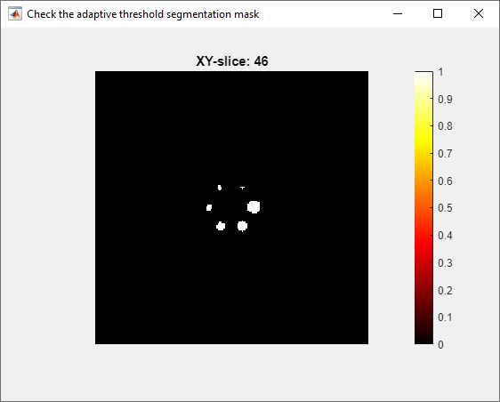
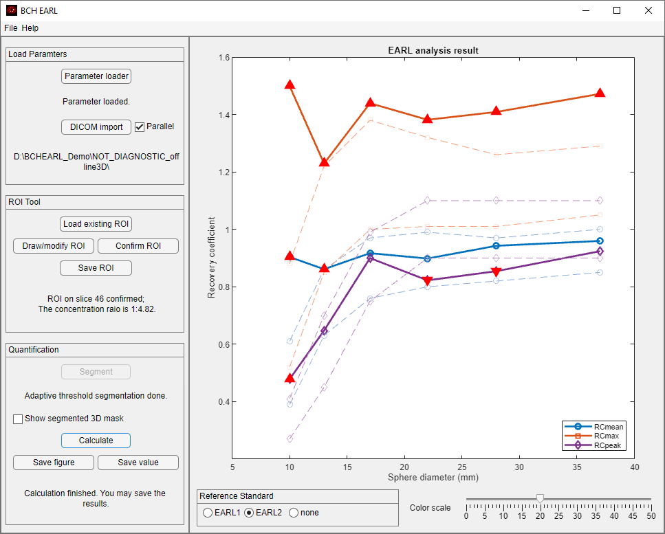
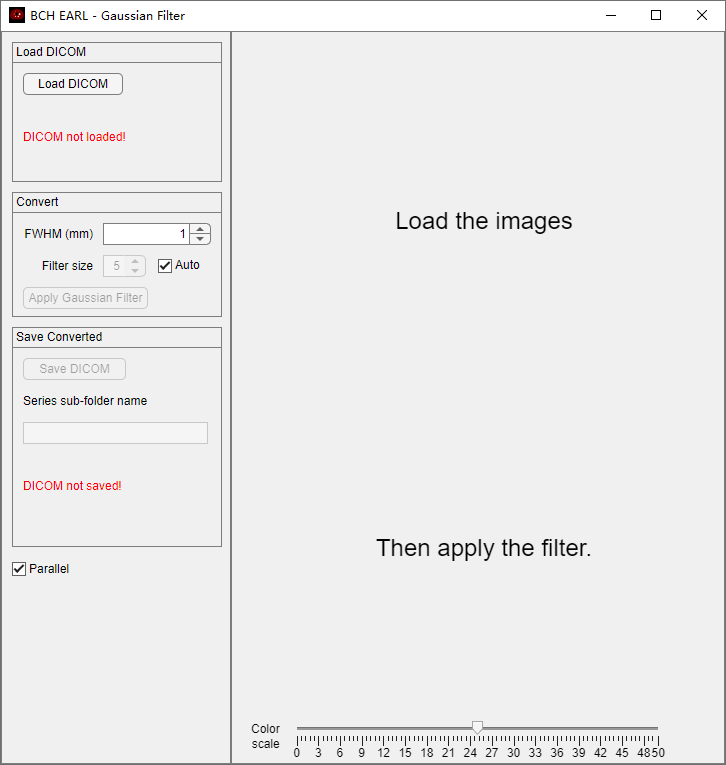
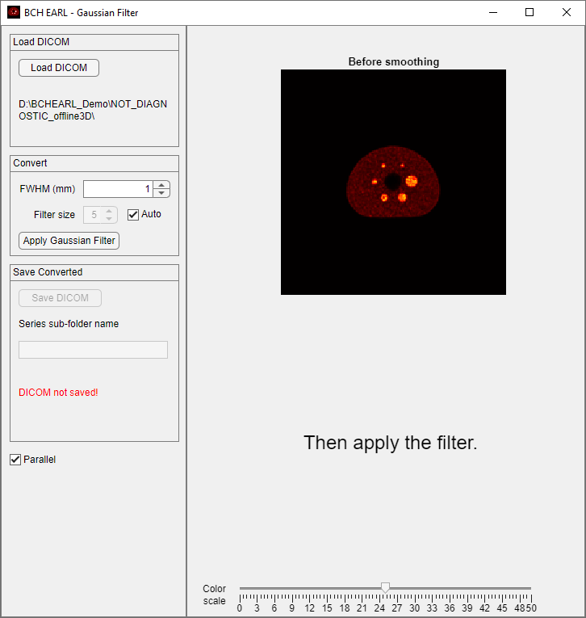
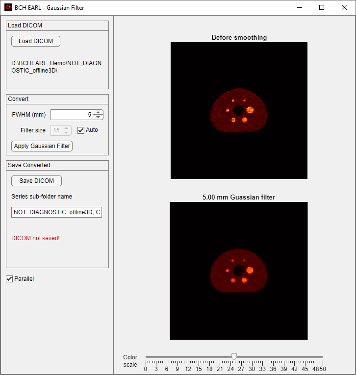
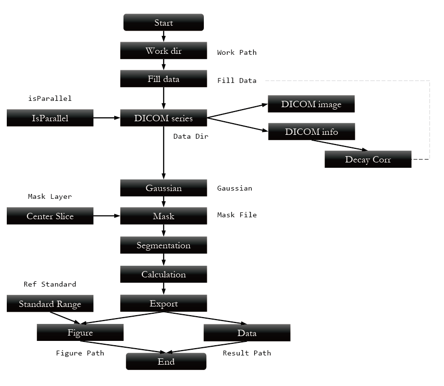

User guide ¶
Installing ¶
BCH EARL is distributed through Windows executable files.

The current version is developed by MATLAB App Designer, thus it requires a MATLAB runtime of a certain version.
Offline installation
By default, the (high quality) internet connection is required to download the MATLAB runtime. When installing offline, you may need to prepare the corresponding runtime manually and specify the runtime folder.

Apart from this, the installation process shall be smooth.
Calculating with GUI ¶
Upon successful installation, you can see run the application.

The Menu is on the top. Below it are two panels. The Left Panel contains several groups that go through the whole workflow, namely Load Parameters, ROI Tool, and the Quantification. The Right Panel contains the Figure Area, the Reference Standard Option, and the Color Scale.
Specify the working directory ¶
It is highly recommended to set the working directory before each run. To do so, use the menu File>Specify working directory. The default directory when the program is started is %UserProfile%\Documents\MATLAB.
Specify the phantom filling parameters ¶
To specify the filling doses, filling volumes, and filling times, press Parameter loader to start a new app window.

If strictly adhered to the official BCH EARL imaging protocol (to be released later) and used the official record form (to be released later), the items shall be readily at hand. Otherwise, you may need to make some compromise.
Once provided all necessary data, you may press Done to accept the values. Or you can Save the data to a .mat binary file, to be later loaded using the Load existed button. This binary file can also be used in the task file.
Import the DICOM series ¶
Next, the DICOM series of the PET image of the phantom is imported. First click on the DICOM import button, and choose any one DICOM file in the folder. Then, the whole series will be loaded. The center coronal slice will be visualized at the Figure Area.

The Parallel checkbox is enabled by default, which means the loading process is using the parallel feature. You may uncheck it when necessary.
You can adjust the Color scale on the lower right corner of the right panel. The effect of the color scale is global.
The Color scale is in an arbitrary unit and affects the visualization of most of the color map images in this program.
Obtain a preliminary ROI ¶
Concept of the preliminary ROI
Although it is not very hard to implement a fully-automatic sphere-locating algorithm, I still chose to use the semi-automatic way for stability and to raise alert. The preliminary ROI is drawn over the central slice and is used as the initial range in the final (adaptive 50% isocontour) VOI segmentation.
In this program, I use (preliminary) ROI to denote the 2D circles defined by the users, and use VOI to denote the automatically segmented 3D spheres.
Thus, it is recommended to drag the radius of the ROI to be slightly larger than the radius of the corresponding sphere.
To draw a new preliminary ROI, press Draw/modify ROI button. This button is only enabled when both the phantom dose parameters and the DICOM series are properly loaded. A new window will pop up, and you can adjust the ROIs with mouse.

Interacting with the 3D slice viewer
A 3D slice viewer is a MATLAB figure window to visualize 3D images. The basic functions are:
- Mouse scrolling: scroll through consecutive layers of the image.
Save as/Copy as Image/Copy as Vector Graphic: MATLAB figure window function.Pan: MATLAB figure window function.Zoom In: MATLAB figure window function.Zoom Out: MATLAB figure window function.Restore View: MATLAB figure window function.
The axial slices of the DICOM series are presented in this 3D slice viewer window. ROIs corresponding to the six spheres (10 mm, 13 mm, 17 mm, 22 mm, 28 mm, and 37 mm diameter) will appear. First scroll the mouse to locate the slice at the center of the spheres, and drag the ROIs with mouse to the corresponding spheres. You can adjust the radius of each ROI circle by dragging the perimeter when the ROI is activated. You can take the advantage of the Zoom In function. You can also adjust the Color scale.
When the ROI is readily adjusted, you can close the window. A dialog will ask you to confirm the ROI selection. Both the slice and the ROIs will be recorded.
Then, press the Confirm ROI button. The slice on which the ROIs were drawn will be shown in the Figure Area. Meanwhile the concentration ratio between the spheres and the background body is shown on the interface.

You are advised to always save the manually defined preliminary ROIs and the corresponding slice number to a binary file with Save ROI button. You can later reload it with Load existing ROI button.
Segment and calculate the RCs ¶
Once the ROIs have been confirmed, the Segmentation button is enabled. Press the button and the spheres will be segmented. Currently, only the 50% threshold segmentation via the region growth algorithm (holes filled) is supported, using the highest value point in the ROI as the seed. The threshold for the \(i\)-th VOI is \(T_i\) is defined by the following equations.
where \(C_{background}\) is the background concentration at the reference time point (Bq/mL), and \(\boldsymbol{I}\) is the concentration derived from the image at the same reference time point (Bq/mL). \(\boldsymbol{I}\) is voxelized.
Segmentation failure
If the contrast of the sphere is too low, the segmentation may fail. Please refresh the program and try another image.
After completion, the segmented spheres will be shown in the Figure Area.

If the Show segmented 3D mask checkbox is selected, a 3D slice viewer will show the segmented mask. Users can check if the segmented regions are as expected.

Then, press Calculate. The recovery coefficients (RCs) will be calculated, including \(\mathrm{RC_{mean}}\), \(\mathrm{RC_{max}}\), and \(\mathrm{RC_{peak}}\). A plot will be updated in the Figure Area, with the specified Reference standard.

The blue line indicates \(\mathrm{RC_{mean}}\); the orange line indicates \(\mathrm{RC_{max}}\); and the purple line \(\mathrm{RC_{peak}}\). An upward triangle means the point is over the higher limit of the reference standard, while a downward triangle means the opposite.
\(\mathrm{RC_{peak}}\)
There are difference definitions of \(\mathrm{SUV_{peak}}\), thus the \(\mathrm{RC_{peak}}\) is also ambiguous.
Explanation: \(\overrightarrow{\theta^\max_i}\) is the vector corresponding to the maximum point of in spherical VOI \(\Omega_i\). \(\Omega_i^P(\overrightarrow{\theta})\) is the spherical VOI whose volume is 1 cm3. \(C_{\mathrm{sphere}}\) is the concentration of radionuclide in the spheres (Bq/mL).
There is a problem with this algorithm. If the image is severely influenced by the Gibbs effect and \(\overrightarrow{\theta^\max_i}\) is located close to the surface of the sphere, then the volume \(\Omega_i^P(\overrightarrow{\theta})\) would contain a significant portion of the background, resulting in the abnormally lower \(\mathrm{RC_{peak}}\).
Export the results ¶
Now, the plot and the values are ready to be exported. Press Save figure to export the plot. Press Save value to export the data to an ASCII file.
Gaussian filtering ¶
You can apply the Gaussian filter and save the filtered image using the Gaussian filter function, with File>Gaussian Filter.

Reconstruct unfiltered images
I recommend the users to reconstruct unfiltered images, and apply Gaussian filtering with BCH EARL.
Due to differences in implementation, the filtered images generated by BCH EARL and applied in the postprocessing step of image reconstruction are not bit-by-bit equivalent. However, the developer has tested some cases, they are “close enough”.
First, load the original DICOM file using Load DICOM button. The axial slice will be shown. To use the parallel function, enable the Parallel checkbox.

Then, you can specify the FWHM of the Gaussian filter. You can also specify the filter size (kernel size). Select the auto checkbox, and the kernel size \(k\) will be calculated using the following equation.

The filtered image should be saved to a new series. Use the Save DICOM button. This button will generate a new folder in the same level as the original DICOM folder, but this new series will have a new series number. You can also specify the folder name. To use the parallel function, enable the Parallel checkbox.
Calculating with task file ¶
Once you have performed the analysis using the GUI with your new dataset, you can then perform batch jobs using a json task file.
To do this, you need to first edit the task file using your favorite text editor, save it with the extension of .json, and select this file through File>Load task file. Then, plots and values will be generated and exported automatically.
The whole process is illustrated in the following chart.

The json task file template explained ¶
The task file must have the extension of .json and must follow the JSON convention.
Validation of the JSON file
It is important to ensure the format validity of the JSON task file. You may use a JSON formatter to check it. You can find many related tools on the internet.
A demonstrative task file can be found in the demo data. And below is a simplified version.
{
"Demo":[
{
"Work Path":"D://BCHEARL_Demo",
"isParallel":1,
"Data Dir":"NOT_DIAGNOSTIC_offline3D",
"Fill Data":"./demoFillData.mat",
"Mask File":"./demoROI.mat",
"Mask Layer":0,
"Gaussian":0,
"Ref Standard":"EARL2",
"Figure Path":"./",
"Result Path":"./"
}
]
}
Explanation:
- The instance name here is
"Demo". - All fields are compulsory in all instances. Do not omit any of them.
"Work Path"is the working directory. It should be an absolute path for clarity."isParalllel"specifies if the parallel function is used.Data Dir"is the path to the DICOM series data to be analyzed. It can be either a relative or an absolute path, but it has to be the folder."Fill Data"is the path to the binary file for the phantom parameters previously generated. It can be either a relative or an absolute path."Mask File"is the path to the binary file for the preliminary ROIs previously generated. It can be either a relative or an absolute path."Mask Layer"is the layer of the center slice. Use0for the automatically determined layer (valid in most cases), or an integer for a self-defined value."Gaussian"is the FWHM of the Gaussian filter in mm. If the value is0, the filtering step is omitted."Ref Standardis the reference standard on the RC plots. It can be either"EARL1"or"EARL2", and other strings will result in no reference standard."Figure Path"is the path to the image file to be exported. It can be either a relative or an absolute path. If the path is a folder, the instance name is used as the file name, and.pngis used as the extension name. If the string is void, no image file will be exported. You will receive a warning if neither the image nor the value is exported."Result Path"is the path to the ASCII file to be exported. It can be either a relative or an absolute path. If the path is a folder, the instance name is used as the file name, and.csvis used as the extension name. If the string is void, no image file will be exported. You will receive a warning if neither the image nor the value is exported.
Windows path convention
Use / or \\ as the path separator. Do not use the system default \, because it is an escape character.
Other functions ¶
Parallel ¶
The parallel computing function is provided through MATLAB. Generally, this feature may accelerate the loading and saving of multiple DICOM files. However, there are some side effects.
Risks of parallel
- The starting of the parallel pool can be very slow.
- The memory management of parallel has bugs.
Refresh ¶
File>Refresh will refresh the program, setting most functions and variables to the default status.
The Parallel check box is not affected. The working directory is not affected either.
Free RAMs
Due to a problem with the parallel feature of MATLAB, the RAM may not be able to be freed without restarting the program. Refreshing the program will not help to release the RAM in such cases.
About ¶
Help>About prints the information about the program, including the license.
Help ¶
Help>Help points to the help page for this program.